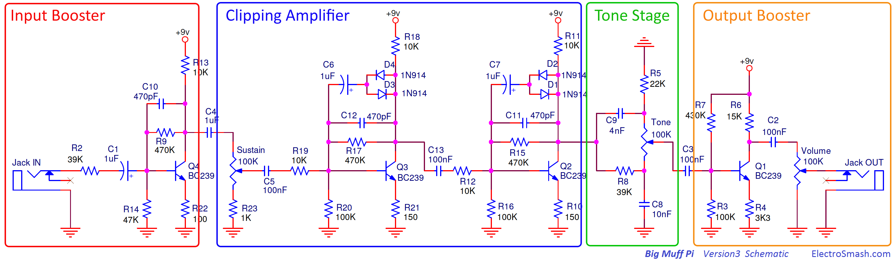
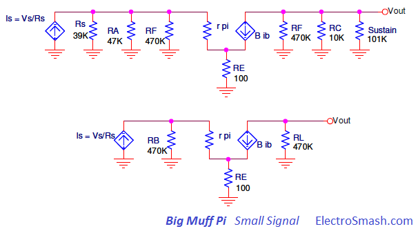
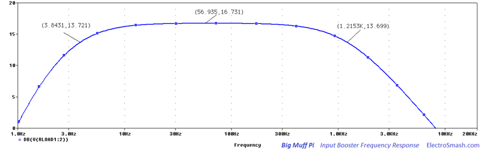
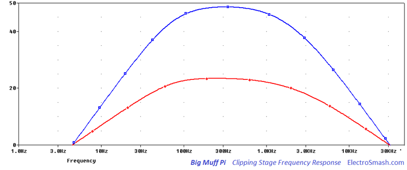
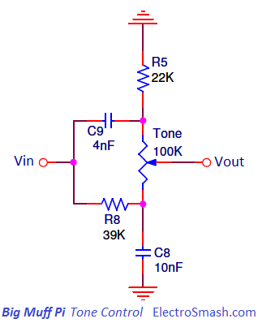
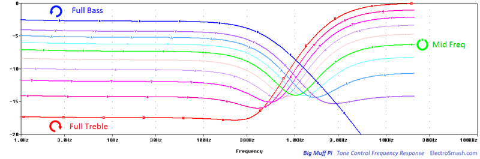
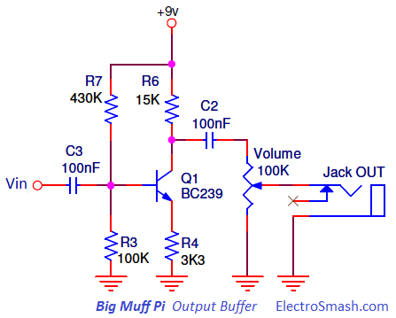

Big Muff Pi Analysis
The Big Muff Pi is a distortion/sustain guitar pedal designed by Bob Myer and Mike Matthews in 1969 and mass produced in 1970. This effect was the first overwhelming success of Electro-Harmonix due to the distinctive sound, price, and reliability. Several versions and reeditions were released over the years.

Many inspiring guitarists use this stompbox, giving to the Big Muff Pi a leading role in the hard-driving music signature:
Tony
Peluso of The Carpenters, Carlos Santana, David Gilmour of Pink Floyd,
Ronnie Montrose, Mike Mills and Pete Buck of R.E.M., Robin Finck of
Nine Inch Nails, Brian Molko of Placebo, Cliff Burton of Metallica,
Kurt Kobain of Nirvana, Thom Yorke of Radiohead, Pete Townshend of The
Who, Thurston and Lee Renaldo Moore of Sonic Youth, Billy Corgan of
Smashing Pumkins, J. Mascis of Dinosaur Jr., Dan Auerbach of Black Keys,
Ace Frehley of Kiss, The Edge of U2, Jamie Cook of the Arctic Monkeys,
Jack White of White Stripes, John Frusciante of The Red Hot Chili
Peppers, Chris Wolstenholme of Muse are some of the B.M.P well known
users.
Table of Contents:
1. The Big Muff Pi Circuit.
1.1 List of Materials / Parts List.
2. Input Booster Stage.
2.1 Shunt Feedback Common Emitter Stage.
2.2 Input Booster Voltage Gain Calculation.
2.3 Input Impedance Calculation.
2.4 Input Booster Frequency Response.
3. Big Muff Pi Clipping Stage.
3.1 Sustain Circuit.
3.2 Clipping Amplifier Voltage Gain Calculation
3.3 Clipping Method.
3.4 Clipping Stage Frequency Response.
4. Passive Tone Control Stage.
4.1 Tone Control Frequency Response.
5. Output Stage.
5.1 Big Muff Pi Output Impedance.
6. Big Muff Pi Bias and Tone Response.
7. Resources.
7.1 Datasheets.
1. The Big Muff Pi Circuit.
The Big Muff Pi circuit consists of 4 cascaded common emitter
amplifier stages with a passive tone control. The schematic can be
broken down into 4 simpler blocks: Input Booster, Clipping Stage,
Passive Tone Control and Output Booster.

The circuit design was inspired by previous Fuzz pedals like the Dallas Arbiter Fuzz-Face, Maestro Fuzz-Tone or Electro-Harmonix Axis Fuzz. In addition, the BMP introduced a double clipping stage, a new tone control and it is able to produce a characteristic sustained distortion sound never heard before.There are also several enhancements on the design in order to make the circuit stable and reliable: All components are based in silicon, all transistor stages include an emitter resistance, which makes the gain independent from temperature or transistor intrinsic characteristics. Three out of four stages include feedback resistors and Miller capacitors, which stabilize the behavior and frequency response. It is a big advantage versus the contemporary dodgy pedals based on germanium.
The components selected for the design are very generic and easy to find: just high gain NPN transistors, simple silicon diodes and standard resistors, caps and three 100K linear pots. Avoiding exotic parts and making the circuit ready for mass production and a shortage of suppliers.
This study is focused on the American Version 3, associated with the iconic bold red and black design and released in 1976-1977, the analysis can be easily extrapolated to any other version.
1.1 Big Muff Pi List of Materials / Parts List.
The components are labeled following the original Electro-Harmonix printed circuit board:
4 NPN Transistors: BC239 or equivalents 2N5088, 2N5089, BC549C, SE4010, 2N5210, 2N5113: Q1, Q2, Q3, Q4.
4 Silicon Diodes: 1N914 or equivalent 1N4148: D1, D2, D3, D4.
3 Potentiometers 100K Lin: Sustain, Tone, Volume.
5 Resistances 10K: R13, R19, R18, R11 R12.
3 Resistances 100K: R20, R16, R3.
3 Resistances 470K: R9, R17, R15.
2 Resistances 39K: R2, R8.
2 Resistances 150: R21, R10.
2 Resistances 15K: R6.
1 Resistance 47K: R14.
1 Resistance 100: R22.
1 Resistance 3.3K: R4.
1 Resistance 1K: R23.
1 Resistance 22K: R5.
4 Capacitors 1uF: C1, C4, C6, C7.
4 Capacitors 100nF: C5, C13, C3, C2.
3 Capacitors 470pF: C10, C11, C12.
1 Capacitor 4nF: C9.
1 Capacitor 10nF: C8.
2. Big Muff Pi Input Booster Stage.
This clean boost stage is based on a Common Emitter amplifier with
Shunt Feedback and some arrangements to enhance the
performance. 
The Input Booster sets the pedal input impedance, shapes the frequency response and adds some gain.
2.1 Big Muff Pi Shunt Feedback Common Emitter Stage.
In common emitter amps, the approximate voltage gain is collector resistance divided by the emitter resistance (RC/RE), but the effect of the feedback resistor has to be taken into consideration:
The resistor R9 from collector to base also called Shunt Feedback resistor or RF
is a method to apply negative feedback to the amplifier. While it
results in a reduced overall voltage gain and input impedance, a number
of improvements are obtained:
- Better stabilized voltage gain.
- Improved frequency response.
- Reduced Noise.
- More Linear operation.
- More immune against variations in temperature and transistors Beta.
How it works?: If the emitter current were to increase, the voltage drop across Rc increases, decreasing Vc, reducing Ib feedback to the base. This, in turn, decreases the emitter current, correcting the original increase. The value of R9 should be selected so that the collector voltage is half of the supply voltage.
2.2 Input Booster Voltage Gain Calculation.
A simplified analysis method must be used to calculate the voltage gain of the amplifier, otherwise, it turns into an arithmetic nightmare. It consists of 3 steps:
- a) Identify the Amplifier Topology:
The topology is known as Voltage-Shunt Feedback: voltage
refers to connecting the output voltage as the input to the feedback
network and Shunt refers to connecting the feedback signal in
parallel/shunt with the input current source.
- b) Draw the equivalent circuit without the feedback network: The
idea is to draw an equivalent amplifier without feedback but taking the
loading of it into consideration. In the image below, the resistor
values are substituted by generic labels, in order to make the formulas
more intuitive:

The equivalent circuit uses Norton's current source since the feedback signal is current. In the image below, the feedback resistor is grounded in the input and output sections and the resistors grouped:

Where:
- c) The voltage gain can be calculated following the simplified analysis of these equations:
AZ: Voltage-Shunt Gain without feedback formula:
BG: Feedback Voltage-Shunt formula:
AZF: Voltage-Shunt Gain with Feedback
GV: Voltage Gain:
Replacing the Input Booster circuit values RB=20.4K, RL=9K, RE =100, RS=39K and RF =470K the results obtained are BG=1/470K, AZF=374.2 and the voltage value is GV=9.6 (19.6dB) although doing the simulation the GV never reaches this value (it is 16.7 dB).
2.3 Big Muff Pi Input Impedance Calculation.
The Big Muff Pi input impedance is R2 aka RS series resistance plus the input impedance of the Input Booster stage:
Zin = RS + (Rin input Booster)
The input resistance of the Input Booster due to the emitter resistance and the feedback network effect is much smaller than R2. So, the value of the input resistor R2=39K accounts for almost all of the signal loading at the input. The 39K it is indeed a low input impedance, and the guitar signal might suffer tone sucking (loss of high frequencies), although tone and volume loss is compensated by the rest of the circuit design.
Increasing the 39k R2 input resistor, the input impedance is increased but it also forms a voltage divider at the input, reducing the available voltage gain.
The Emitter Resistance: Adding an emitter resistance R22 to a common emitter amp, also known as Emitter Degeneration, makes the voltage gain less dependant from BJT parameters, and therefore less vulnerable to temperature and bias current changes. The stability characteristics of the circuit are thus improved at the expense of a reduction in gain.
2.4 Input Booster Frequency Response.
The frequency response is tailored by two capacitors: the input decoupling cap C1 which sets the low-frequency response (roll-off the bass) and the Miller Capacitor C10 which shapes the high-frequency response (roll-off the highs):

- Input Capacitor C1: creates a high-pass filter, increasing its value will result in a more bassy response and increasing the signal into the pedal. The cut-off frequency is around 3.8Hz, not disturbing guitar harmonics.
- Collector to Base feedback Capacitor: C10 is a Lag Capacitor or Miller Capacitor compensation to avoid oscillation which sets the amplifier bandwidth and the dominant pole frequency. The effective value of the C10 capacitor is increased by the internal collector-base capacitance (base to collector depletion capacitance) of the BJT.
With a C10 of 470pF and depending on the internal BJT capacitance, low pass filter cut-off frequency is around 1.2KHz. This operation occurs just before the distortion stage; clipping a low-passed signal usually sounds better, smoother and less harsh.
The usual values for this cap are decs to some hundreds of pF, lowering the C10 value will result in a more treble response, rolling-off fewer highs.
3. Big Muff Pi Clipping Stage.
The clipping Stage is made of a passive voltage divider (sustain
potentiometer) and two consecutive common emitter stages. Each
of the two consecutive Q2/Q3 clipping stages
keeps the same topology as the Input Booster. In addition, the
clipping amplifiers include a back to back diodes to create the
symmetric clipping.
The design idea for the double distortion is that the first transistor softly clips the waveform in the feedback loop: creating the distortion and filtering the signal. After the first clipping transistor, the second one repeats the operation again and refines the distorted signal creating the hard clip.

3.1 Big Muff Pi Sustain Circuit.
The 100K sustain potentiometer controls the level of the signal going into the clipping blocks. If the level is high, the signal will be more clipped and the distortion effect will hold even if the guitar input signal is not strong. The resistor R23 prevents the signal from coming from the Input Booster from being cut-off when the sustain pot is at the lowest setting.
3.2 Clipping Amplifier Voltage Gain Calculation.
The voltage gain can be calculated applying the simplified analysis method as in the Input Booster:
- First Clipping Stage, using the formulas of the Input Booster:
RB = RS//RA//RF = 10K//100K//470K = 8.9K
RL = RF//RC = 470K//10K = 9.8K
RE = 150
RS = 10K
RF = 470K
The results obtained are:
BG = 1/470K
AZF = 260
The Voltage Gain is GV = AZF/RS = 260/10 = 26 (28dB). In the real circuit is around 23 dB.
- Second Clipping Stage, using the formulas of the Input Booster:
RB = RS//RA//RF = 10K//100K//470K = 8.9K
RL = RF//RC = 470K//15K = 14.5K
RE = 150
RS = 10K
RF = 470K
The results obtained are:
BG = 1/470K
AZF = 304
The Voltage Gain is GV = AZF/RS = 304/10 = 30 (29dB). In the real circuit is around 25 dB.
Note: In the calculation, the diodes feedback network is not taken into consideration because it contains big capacitors C6 and C7 which disconnect the path for DC conditions.
The Gain of the second clipping stage is slightly higher (1 or 2 dBs) than the first one. However, the voltage gain of this stage will not reach such values as 28 or 29dBs. As it will be seen in the next point, the gain is limited by the clipping diodes action. The output signal of the amplifiers will never exceed ±0.6V and all the extra gain will modify the slew rate and the shape of the clipped signal.
3.3 Big Muff Pi Clipping Method.
The diodes D1-D2 and D3-D4 in the collector-base feedback loop of the transistors, clip the signal when the voltage difference between the input (transistor base) and the output (transistor collector) is higher than the VF of the diode, which is around 0.6V. So they will limit the signal peaks and the output signal will never exceed ± 0.6V.
The big 1uF series capacitors C6 and C7 located next to the feedback diodes, allow the AC signal to pass through it and be clipped and block the DC bias voltage. Keeping the transistor operating point undisturbed. These caps determine the frequency band the unit clips. Enlarging this cap will make it clip more bass harmonics, make it smaller for more high-end clipping and archiving more saturated tone, more sustain, and compression
3.4 Clipping Stage Frequency Response.
In each of the clipping amplifiers, the frequency response is similar to the Input Booster, tailored by two capacitors: The input series decoupling caps C12-C19 acting as a high pass filter and rolling-off the bass below some decs of Hz and the C6-C7 Miller Capacitors acting as a low pass filter shaping the high frequency response and rolling-off around 1KHz:

In the image above, the Clipping Stage frequency response is shown. The red curve illustrates the output after the first clipping, with a maximum gain of 23.4 dB and band limited with two poles at 55Hz and 1.78KHz. The blue curve shows the output after the second clipping, with a maximum gain of 25.2 dB (48.6 - 23.4 = 25.2) and band limited with two poles at 94Hz and 1.17KHz.
The BMP distortion is very narrow bandwidth limited, attenuating harmonics at 40dB/dec outside the pass-band, and taking into consideration the Input Booster similar response which adds another two poles, all frequencies below 90Hz, and over 1.2KHz are attenuated 60dB/dec.
The basic idea inside the Big Muff Pi is to remove the high harmonics using Miller Capacitors three times: in Q4, Q3 and Q2 around 1.2 KHzand resulting in a narrow frequency limited response that accentuates the lows and low mids, making it perfect for bass-less bands. It seems that getting rid of its overdriven high end is the trick to increase the sustain of the guitar.
4. Big Muff Pi Passive Tone Control Stage.
The Passive Tone Control has a simple and effective design: essentially it is just a combination of high-low pass filters that are mixed together by a single linear 100K Tone potentiometer. The cut-off points are designed so that their interweaving effect introduces a middle-frequency scoop/notch at 1KHz when the potentiometer is set to the middle position.

4.1 Big Muff Pi Tone Control Frequency Response.
Find below the BMP frequency response, showing from blue to red all values of the tone potentiometer:

- The green response line has the tone pot set at the midpoint, evidencing the 1KHz scoop. It also shows that the tone control is not able to archive a flat response. There is an overall 7dB loss and at the notch, the loss is about 6.5db (-13.5db total) at 1KHz.
- The blue and red color curves have the tone at full treble/bass respectively.
5. Output Stage.
The Output Stage is once again a common emitter amplifier amp which recovers the volume loss during the passive tone stack.

The design of this last stage is simpler than the previous ones, not including resistor Shunt Feedback or Miller compensation. The frequency response is then flat across the audio band and the gain is about 13dB, compensating the loss in the passive tone filter.
The Voltage Gain in this basic common emitter topology is
GV = RC/RE = R6/R4 = 15K/3.3K = 4.5 = 13dB
The Output impedance of the common emitter transistor stage is equal to RC = R6 = 10K.
The last part of the circuit is a simple 100k volume potentiometer that regulates the output level.
5.1 Big Muff Pi Output Impedance.
The pedal output impedance also depends on the volume potentiometer position, being always less than 10K:
- Volume Potentiometer at maximum volume: Zout = Zout|Output Stage // 100K = 9K approx.
- Volume Potentiometer at minimum volume: Zout = Zout|Output Stage + 99K // 1K = 1K approx.
6. Big Muff Pi Bias and Tone Response.
In the image below, the most important DC bias points are shown. It can be useful to trace circuit failures:

In the graph below the most important signals at the output of each stage are shown:

- Orange Signal: It is the input signal, for this test a 1KHz, 200mVpp guitar alike signal is used.
- Black Signal: It is the output of the Input Booster, just the input signal inverted and amplified 9.6 times (19.6dB). At this point is important to mention that due to the low-level value of R14=47K, the VC of the transistor is not at Vcc/2=4.5V but at 7V. It might cause asymmetric clipping if the input signal is bigger than 0.2Vpp.
- Red Signal: It is the output of the first Clipping Stage, the previous signal is amplified 23 dBs and the amplitude is clipped to ±0.6V. The Sustain potentiometer is set at maximum value.
- Blue Signal: It is the output of the first Clipping Stage, the previous signal is amplified 25 dBs and the amplitude is clipped to ±0.6V. After two consecutive clipping stages, the shape is more square or hard.
- Green Signal: It is the output after the Tone Control, set at mid position. The signal is attenuated around 13dBs because at 1KHz the mid scoop is there and the shape is slightly changed.
- Pink Signal: It is the output signal of the Big Muff Pi. The previous signal is amplified 13dBs without changes in frequency. The Volume potentiometer is set at maximum value.
7. Resources.
The Big Muff Page, the most comprehensive site about BMP by Kitrae.
Feedback BJT Amplifier Analysis by Dr. Ahmed Saadoon.
Feedback BTJ Amplifier Analysis by the University of Vigo.
BMP Mods and Tweaks.
BMP Questions in DIYaudio.
BMP tone Control by AMZ.
Teemuk Kyttala Solid State Guitar Amplifiers, the Holy Scripture.
Our sincere appreciation to B. Toskin for helping us with the article.
7.1 Datasheets.
- NPN Transistors:
BC239 Datasheet.
2N5088/2N5089 Datasheet.
BC549C Datasheet.
SE4010 Datasheet.
2N5210 Datasheet.
- Silicon Diodes:
1N914 Datasheet.
1N4148 Datasheet.
Thanks for reading, all feedback is appreciated